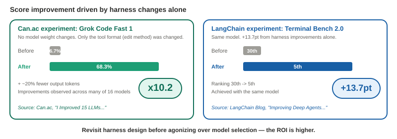
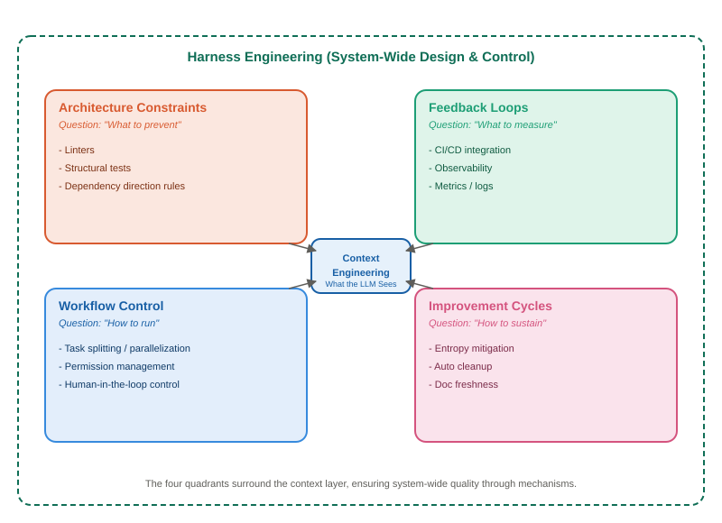
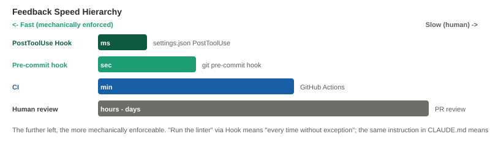
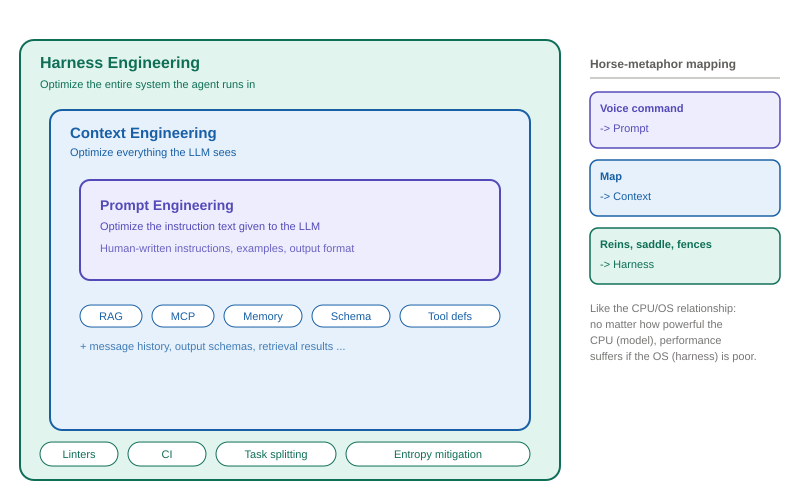
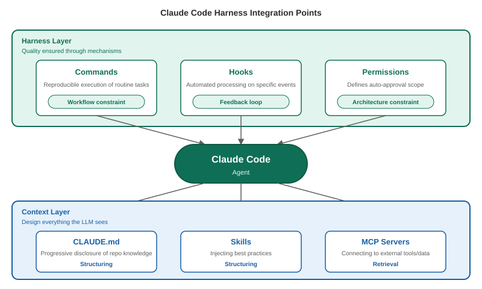

What Is Harness Engineering: A New Concept Defining the "Outside" of Context Engineering¶
For / Key Points
For: Engineers familiar with the basics of context engineering / Developers looking to improve Coding Agent operations / Anyone seeking a framework to organize the proliferation of "X engineering" terms
Key Points:
- The harness is environment design that ensures agent quality through mechanisms, not prompts. It addresses "system-level deviations" that cannot be prevented by improving prompts or context alone
- Scores shift by orders of magnitude depending on the harness. In Can.ac's experiment, one model improved from 6.7% to 68.3% without changing any model weights
- Directly relevant for Coding Agent users too. Claude Code's hooks, commands, and permissions are precisely harness integration points
If You Need Implementation Patterns, Start Here¶
Need a concrete harness pattern?
:material-account-tree: Need an agent-architecture case study?
Need the context-side companion piece?
Read Context Engineering: Comparing RAG, MCP, and Agent Skills.
This article explains the concept. If you are already convinced and need implementation examples, the guides above are the faster route.
1. Problems Prompts Cannot Prevent¶
LLM agents are powerful, but repeated use reveals characteristic failure modes.
They write imports that cross layers, ignoring architectural dependency directions. They treat a three-month-old memo in the repository as the current specification. They hit a linter error → edit .eslintrc to turn the rule off instead of fixing the code → CI passes → the issue surfaces in review. They declare a task complete without actually running end-to-end tests.
What these problems have in common is that they cannot be structurally prevented no matter how much you improve prompts or context. Even if you write "run the linter" in CLAUDE.md, it gets forgotten on the 47th iteration of a long debugging session that has consumed most of the context window.
In February 2026, this design discipline — solving "problems that prompts cannot prevent" through mechanisms — was given a name.
2. What Is Harness Engineering¶
Harness engineering is environment design that ensures agent output quality through mechanisms rather than prompts.
Specifically, this includes linters that mechanically enforce dependency directions, hooks that auto-execute on every file save, quality gates via CI pipelines, and repository information freshness management. It refers to the entire set of mechanisms built and operated "outside" the LLM.
The original meaning of "harness" refers to horse tack — reins, saddle, bit — the complete set of equipment for channeling a horse's power in the right direction, preventing runaways, and enabling stable long-distance operation. The concept was named around the metaphor of a transition to a world where powerful but unpredictable horses (LLM agents) plow the fields. Horses can run faster than humans, but left unattended, they veer off course and wander into neighboring fields. Running ten horses simultaneously makes this even worse.
This contrast is intuitive; we revisit it with a three-layer nesting diagram in Section 6 (it is also framed as the relationship between CPU and OS1).
How the Term Emerged¶
The concept had been used in fragments since late 2025, but it crystallized as a term within just a few weeks in February 2026.
Mitchell Hashimoto (co-founder of HashiCorp) gave this practice a name in a blog post with the phrase "Engineer the Harness."2 Days later, OpenAI published a large-scale practical report.3 Ethan Mollick reorganized his entire framework around the three concepts of "Models, Apps, and Harnesses,"4 and Martin Fowler promptly published an analysis article.5 Within just a few weeks, the term joined the core AI engineering vocabulary. As of March 2026, it is transitioning from the "concept introduction" phase to the "systematization of implementation patterns" phase.
3. How Much Does the Harness Alone Change Performance?¶
Definitions alone lack persuasive power. Let us examine the quantitative difference that harness presence or design makes.
Can.ac's Experiment: 10x Difference with the Same Model¶
In the Hashline experiment published by security researcher Can.ac, merely changing the harness's tool format (edit method) improved coding benchmark scores across many of the 16 tested models. Grok Code Fast 1 in particular jumped from 6.7% to 68.3%. No model weights were modified. Output tokens were also reported to decrease by approximately 20%.6
LangChain's Experiment: From 30th to 5th Place¶
Similar results emerged from LangChain's Terminal Bench 2.0. Harness improvements alone vaulted the ranking from 30th to 5th place, achieving a 13.7-point improvement with the same model.7

These results demonstrate that revisiting harness design before agonizing over model selection yields a better return on investment.
4. OpenAI's 1-Million-Line Experiment: A Harness in Action¶
Beyond numbers, let us also examine how harnesses are used in practice. OpenAI's practical report published in February 2026 represents the most detailed case study of harness engineering to date.
Experiment Overview¶
OpenAI's internal team started from an empty repository in August 2025 and built a product of approximately one million lines over five months. The condition: "zero hand-written code." All code was generated by the Codex agent and merged through approximately 1,500 pull requests.3
Development speed was reported at roughly 10x compared to manual development. However, it should be noted that OpenAI has an incentive to make Codex performance look good.
Five Harness Principles¶
The principles derived from this experiment can be read as a practical guide to harness engineering.
Principle 1: Design the environment, don't write the code. The engineer's job shifted to preparing the environment for agents to function effectively. When an agent got stuck, rather than "trying harder," the approach was to diagnose "what capability is missing" and have the agent itself build that capability.
Principle 2: Enforce architecture mechanically. They defined dependency directions per domain and used custom linters and structural tests to automatically detect violations. Writing it in documentation is not enough; if it cannot be enforced mechanically, agents will deviate.
Principle 3: Make the repository the single source of truth. Knowledge in Slack discussions or Google Docs is effectively nonexistent to agents. All team knowledge was placed as version-controlled artifacts within the repository.
Principle 4: Connect observability to the agent. They connected Chrome DevTools to the runtime, enabling the agent to capture DOM snapshots and screenshots. By granting the ability to query logs and metrics, instructions like "get startup time under 800ms" became measurable goals.
Principle 5: Fight entropy. Initially, 20% of team time every Friday was spent manually cleaning up "AI slop." This was automated into background tasks run by Codex.
5. The Four Quadrants of the Harness: What to Design¶
The harness is not a single technology. What, exactly, should you design? Looking at OpenAI's case, it becomes clear it spans multiple areas of concern. We organize these into four quadrants.

The four quadrants each correspond to different questions:
- Architecture constraints: "What to prevent" — Mechanically blocking deviations with linters and dependency rules
- Feedback loops: "What to measure" — Verifying results through CI/CD and observability
- Workflow control: "How to run" — Designing agent pathways through task splitting, parallel execution, and permission management
- Improvement cycles: "How to sustain" — Maintaining long-term quality through entropy management and document freshness
What matters here is feedback speed.
Feedback Speed Hierarchy
PostToolUse Hook (milliseconds) → pre-commit hook (seconds) → CI (minutes) → human review (hours to days)
The faster the layer where a check runs, the more effectively the agent can self-correct. The difference between writing "run the linter" in CLAUDE.md and forcing linter execution via a Hook is the difference between "almost every time" and "every time without exception."

6. The Relationship Between Prompt, Context, and Harness¶
Building on the above, let us organize the relationship between the three "X engineering" concepts.
At a high level, the relationship can be understood as a nested structure: Harness ⊇ Context ⊇ Prompt.

In Phil Schmid's analogy: if the model is the CPU, the harness is the OS. No matter how powerful the CPU, performance suffers if the OS is poor.1
Restated in the horse metaphor from Section 2: prompts are voice commands to the horse, context is the map you show it, and the harness is the reins, saddle, fences, and road maintenance. No matter how smart the horse, you cannot safely run ten of them simultaneously without these.
Containment or Complementarity?¶
There is variation among commentators on how to frame this three-layer relationship.
The containment view is intuitive and easy to understand. On the other hand, mtrajan published a piece titled "Harness Engineering Is Not Context Engineering," clearly distinguishing the questions each addresses.8
- Context engineering asks: "What do we show the agent?"
- Harness engineering asks: "What does the system prevent, measure, and fix?"
In practice, the choice of framing does not significantly affect design decisions. What matters is the recognition that "there are areas that context design alone cannot cover."
That said, this article is structured around the containment model throughout Sections 5 and 7.
A Quick Heuristic¶
Here is a simple criterion for determining "Is this a context issue or a harness issue?"
| Criterion | Context Engineering | Harness Engineering |
|---|---|---|
| Optimization target | Input quality for a single inference | Ongoing quality of the entire system |
| Question format | "What to show" | "What to prevent, measure, control, and fix" |
| Failure pattern | A single output is inaccurate | Quality degrades over time |
| Typical implementation | RAG, prompt design, Memory | Linters, CI integration, task splitting, auto cleanup |
| Change frequency | Dynamic per task | Relatively stable infrastructure design |
7. What This Means for Coding Agent Users¶
How do the concepts above relate to your own Coding Agent? Harness engineering is originally a concept for LLM application developers. However, Coding Agent users are the exception.
Claude Code's Harness Integration Points¶
Taking Claude Code as an example, the harness components that users can freely design are as follows:

| Component | Role | Position in the Harness |
|---|---|---|
| CLAUDE.md | Aggregating repository knowledge with progressive disclosure | Context (structuring) |
| Commands | Reproducible execution of routine tasks | Harness (workflow constraints) |
| Hooks | Automated processing at specific events | Harness (feedback loops) |
| Skills | Injecting best practices | Context (structuring) |
| MCP Servers | Connecting to external tools and data | Context (retrieval) |
| Permissions | Defining auto-approval scope | Harness (architecture constraints) |
Output schema design is typically handled on the tool side for Coding Agents, so it is omitted from this table.
For example, a minimal PostToolUse Hook configuration looks like this. The linter runs automatically on every file save, and the agent receives the result immediately to self-correct.
// .claude/settings.json (minimal example)
{
"hooks": {
"PostToolUse": [{
"matcher": "Write",
"hooks": [{ "type": "command", "command": "npx oxlint $CLAUDE_FILE_PATH" }]
}]
}
}
Practical Considerations¶
When improving Coding Agent operations, if you encounter a situation where "quality isn't improving despite better prompts," it is effective to distinguish whether the problem lies in the context layer or the harness layer.
Signs of a context layer problem: A single output is off-target, necessary information is not being referenced, tool definitions are insufficient.
Signs of a harness layer problem: Individual outputs are decent, but quality varies across repeated use. Architectural consistency breaks down. Fixes from a previous task are ignored in the next one.
In the latter case, improving CLAUDE.md alone is insufficient. What is needed is automated checks via Hooks, workflow standardization via Commands, or adding mechanical quality gates through CI integration.
Parallel Execution and the Harness¶
A development style of running multiple sessions in parallel on Claude Code Web is gaining traction. When ten agents write code simultaneously, file conflicts and architectural deviations become more likely, making the harness even more critical.
Teams have reported fully separating directories by DDD Bounded Context and using static analysis tools like dependency-cruiser to automatically detect dependency direction violations in CI. Git push hooks for linting and type checking may feel cumbersome to humans, but parallel agents do not mind wait times, making these actually well-suited to the workflow.
8. Points to Keep in Mind¶
Maturity of the Term¶
Roughly one month has passed since harness engineering emerged in February 2026, and the systematization of implementation patterns is progressing. However, definitions still vary significantly, and different commentators have different views on its scope. Martin Fowler noted that "the term is used only once in the article body."5
Whether the term itself takes hold remains uncertain. However, even if the term disappears, the problem awareness — "the design domain of constraints, feedback, and improvement for agent systems that context design alone cannot cover" — will persist.
Criticism of the "Harness" Metaphor¶
The original meaning of "harness" is "tack fitted to a work animal," carrying the connotation of equipment for making an entity behave according to the controller's intent. As AI agent autonomy increases, critical analyses have begun to emerge about whether this metaphor remains appropriate.9
Harnesses Should Trend Toward Simplification¶
In contrast to OpenAI's experiment, according to Phil Schmid's analysis, the Manus team rewrote their harness from V1 to V5 (the Manus official blog states four times10). Notably, the direction was toward simplification, not complexity.11
Thinking in terms of the four quadrants presented in this article, there is likely a gradient to the order in which layers thin out. CLAUDE.md/AGENTS.md design know-how (the workflow control layer) is most likely to become unnecessary first, as model context comprehension improves. In contrast, the architecture constraints layer — linters, type checkers, CI — is a foundation of software engineering regardless of whether agents are involved, and will be the last to go. If a harness keeps growing in complexity, it may be a sign of over-engineering that runs counter to model evolution.
Summary¶
Harness engineering is environment design that ensures agent output quality through mechanisms rather than prompts.
The relationship between the three concepts, in one line each:
- Prompt optimizes "the instruction to the LLM"
- Context optimizes "everything the LLM sees"
- Harness optimizes "the entire system in which the agent operates"
What matters is not memorizing a specific term, but recognizing the problem structure: "some problems cannot be fixed by improving prompts" and "some quality cannot be maintained by improving context."
Related Articles¶
- Context Engineering: Comparing RAG, MCP, and Agent Skills — A 2026 Design Guide — Details on the 4-layer context pipeline model
- The Real Question Behind the MCP vs Agent Skills Debate — Resolving the category error between protocols and knowledge
- What Is Anthropic Managed Agents? Brain/Hands/Session Separation Explained — A concrete meta-harness case study built on the same harness-engineering logic
This article was originally published in February 2026 and restructured in March 2026. The term has gained traction, but the boundaries of the concept remain fluid.
Mitchell Hashimoto: My AI Adoption Journey (origin of "Engineer the Harness") ↩
OpenAI: Harness engineering: leveraging Codex in an agent-first world ↩↩
Ethan Mollick: A Guide to Which AI to Use in the Agentic Era (Models, Apps, and Harnesses) ↩
Can.ac: I Improved 15 LLMs at Coding in One Afternoon. Only the Harness Changed. ↩
The Future of Being Human: What we miss when we talk about "AI Harnesses" ↩
Manus: Context Engineering for AI Agents — Lessons from Building Manus ↩